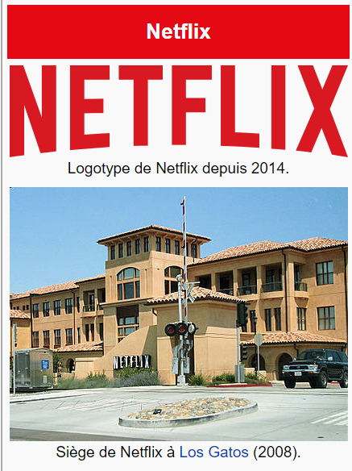

Netflix est une entreprise multinationale américaine créée en 1997 par Reed Hastings et Marc Randolph, opérant dans le secteur d'activité des industries créatives par la distribution et l'exploitation d'œuvres cinématographiques et télévisuelles par le biais d'une plateforme dédiée. Son siège social se situe à Los Gatos en Californie. Initialement, l'entreprise était uniquement présente dans le secteur de l'exploitation commerciale par la fourniture d'un service en ligne de location et d'achat de DVD livrés à domicile puis a proposé la location moyennant un abonnement mensuel. Son service de vidéo à la demande par abonnement commence en 2007. Depuis, l'entreprise s'est lancée dans la distribution d'un grand nombre de films et de séries télévisées à laquelle elle consacre des investissements de plus en plus importants. En outre, Netflix fait l'objet de débats quant à sa légitimité dans ce secteur d'activité, étant issue de la technopole de la Silicon Valley (Netflix fait d'ailleurs partie des entreprises dites des « géants du Web ») et non pas du berceau historique du cinéma américain qu'est le quartier d'Hollywood[réf. nécessaire]. D'une manière générale, l'entreprise participe à une mutation des méthodes de consommation et de production des contenus audiovisuels de plus en plus tournées vers la délinéarisation. Pionnière dans le secteur de la vidéo à la demande par abonnement, Netflix est concurrencée en France et dans le monde par d'autres firmes du cinéma et de la télévision mais également des télécommunications et du commerce électronique.
Comme vous pouvez le constater, Netflix est une plateforme qui nous permet de regarder des films et série en ilimités de tout genre. Que ce soit des films classqique ou non.
Voici la navigation netflix cela nous permet de choisir le film demander, dans ce menu, nous sommes dans la catégorie action et aventure